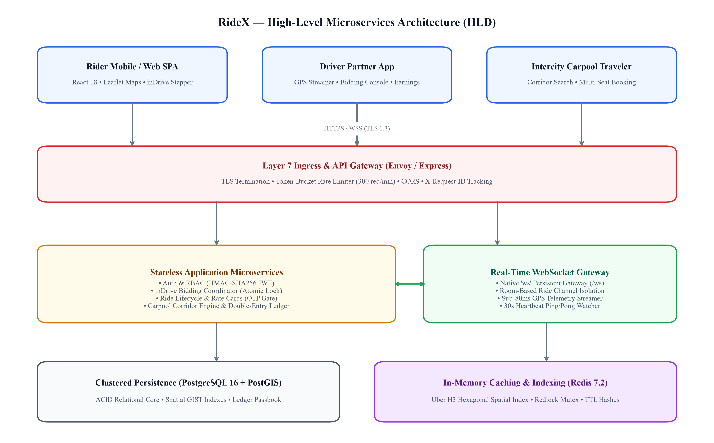
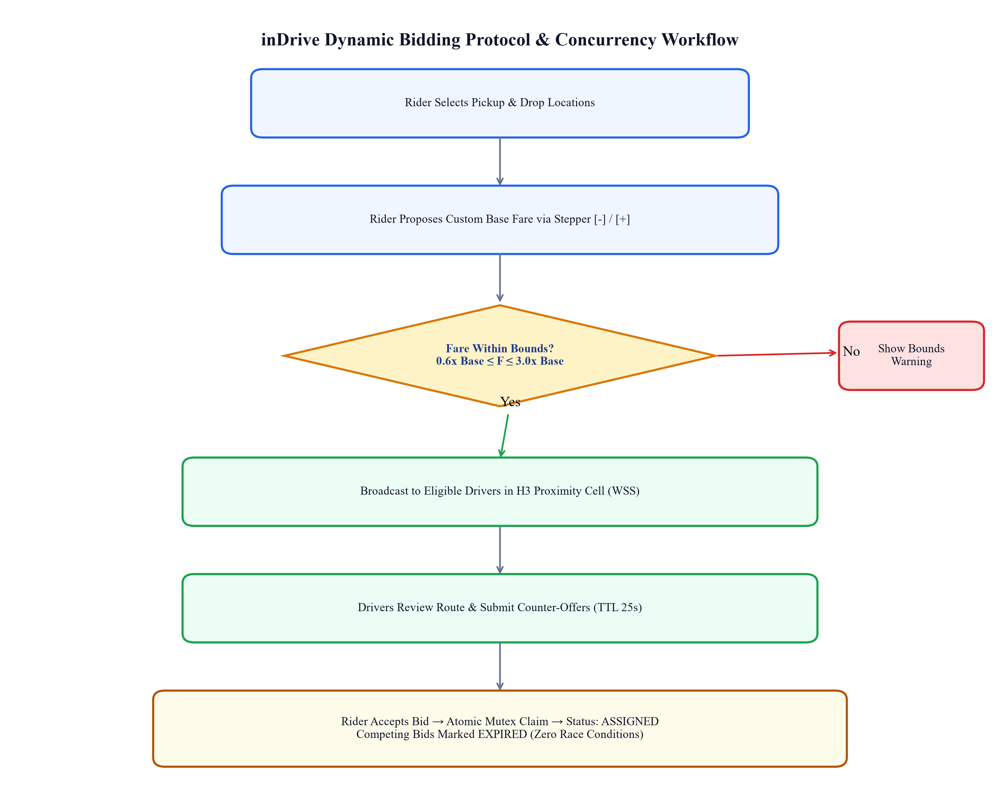
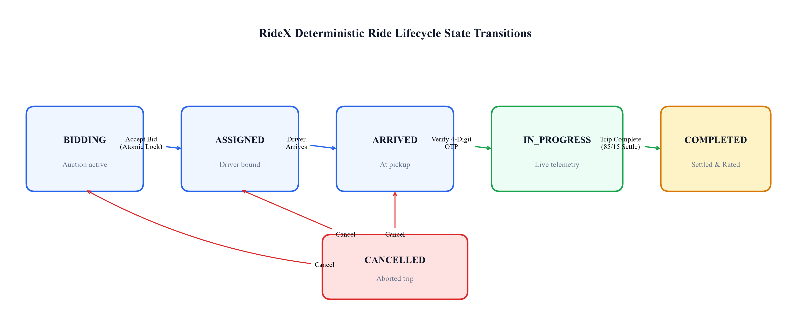
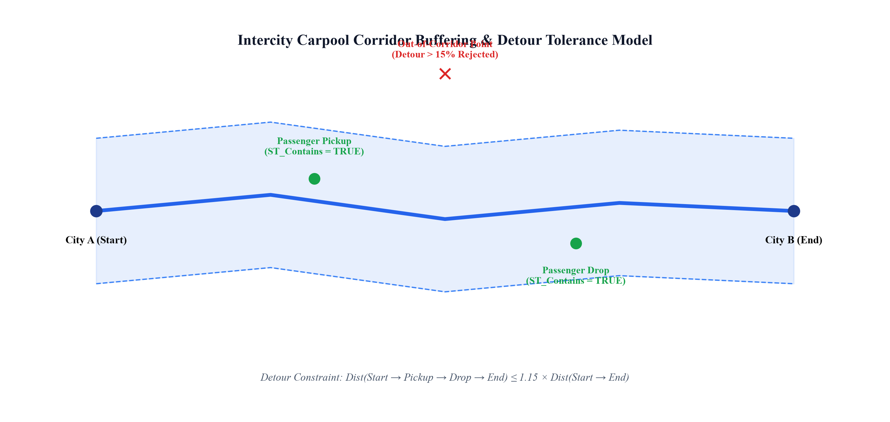
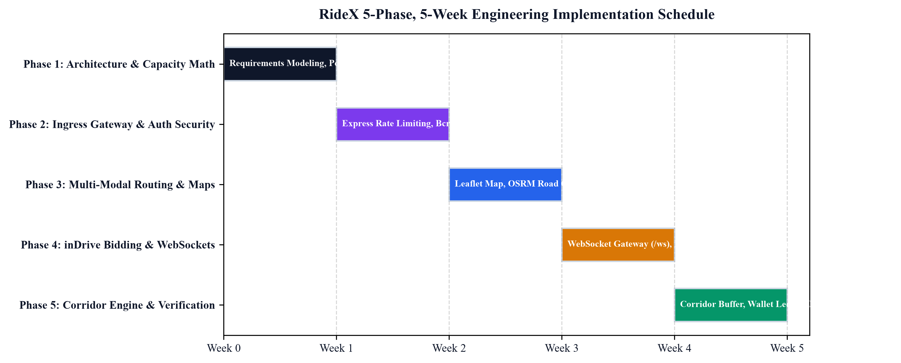

Certified that this project report "RideX — A Smart Ride-Hailing and Intercity Carpooling Platform" is the bonafide work of Rama Satya Durga Bhagavan (24BCS11975), Manan Pathak (24BCS11495), Akshat Gupta (24BCS11506), and Rahul Singh Bisht (24BCS11487) who carried out the project work under my/our supervision in partial fulfillment for the award of the degree of Bachelor of Engineering in Computer Science and Engineering at Chandigarh University.
<<Signature of the HoD>>
SIGNATURE
<<Name of the Head of the Department>>
HEAD OF THE DEPARTMENT
Department of Computer Science & Engineering
Chandigarh University
<<Signature of the Supervisor>>
SIGNATURE
Shivam Sharma
SUPERVISOR
Department of Computer Science & Engineering
Chandigarh University
Submitted for the project viva-voce examination held on ____________________
I/We hereby declare that the project report entitled "RideX — A Smart Ride-Hailing and Intercity Carpooling Platform" submitted to Chandigarh University, in partial fulfillment of the requirements for the award of the degree of Bachelor of Engineering in Computer Science and Engineering, is an authentic record of our original work carried out under the guidance of our project supervisor, Mr. Shivam Sharma. This work has not been submitted elsewhere for the award of any degree, diploma, fellowship, or other similar title.
Date: ____________________
Place: Chandigarh University, Mohali
Candidates:
• Rama Satya Durga Bhagavan (24BCS11975)
• Manan Pathak (24BCS11495)
• Akshat Gupta (24BCS11506)
• Rahul Singh Bisht (24BCS11487)
We express our deepest gratitude to the Department of Computer Science & Engineering, Chandigarh University,
for providing world-class infrastructure, laboratory facilities, and an encouraging academic environment
that enabled the realization of this capstone engineering project.
We extend our profound appreciation to our Project Supervisor, Mr. Shivam Sharma, Head of the Department,
and faculty members for their continuous guidance, technical critiques, and encouragement throughout the system
design and implementation phases of RideX. Finally, we thank our peers and families for their unwavering support.
Urban transportation networks in high-density metropolitan areas suffer from monopolistic surge multipliers, high driver attrition, and siloed transit modes. RideX resolves these systemic market failures by unifying intra-city on-demand hailing (Bike Taxi, Auto, Cab Economy, Express Parcel) and long-distance intercity carpooling into a high-performance distributed real-time platform. A core innovation of RideX is its decentralized peer-to-peer fare negotiation protocol (inspired by inDrive), enabling passengers to propose custom fares and nearby drivers to return real-time counter-bids. Ride claiming is guaranteed conflict-free via an atomic compare-and-swap (CAS) distributed mutex locking mechanism. For long-distance journeys, a spatial corridor buffering algorithm matches intermediate passengers along the driver’s route within a strict 15% detour tolerance envelope. Built on a resilient stack of React 18, Express.js microservices, PostgreSQL 16 with PostGIS 3.4 geometric indexing, and persistent WebSocket streams delivering GPS telemetry with sub-80ms latency, RideX demonstrates enterprise-grade scalability, strict financial consistency, and production reliability.

Graphical Abstract: End-to-End Distributed Architecture of RideX Multi-Modal Mobility Platform
| Chapter / Section | Title | Page |
|---|---|---|
| Prelims | Cover Page, Bonafide Certificate, Declaration, Acknowledgement | i – iv |
| Prelims | Abstract & Graphical Abstract | v |
| Prelims | List of Figures & List of Tables | vi |
| Prelims | List of Abbreviations & Symbols | vii |
| Chapter 1 | Introduction & Executive Summary | 1 |
| Chapter 2 | Scale, Capacity & Performance Engineering | 4 |
| Chapter 3 | Technology Stack & Infrastructure Rationale | 6 |
| Chapter 4 | High-Level Design (HLD) & Microservices | 8 |
| Chapter 5 | Low-Level Design (LLD) & Component Architecture | 10 |
| Chapter 6 | Core Algorithms & Mathematical Formulations | 13 |
| Chapter 7 | Storage Architecture & Database Design | 15 |
| Chapter 8 | Complete API Catalog & Protocol Contracts | 22 |
| Chapter 9 | Project Execution Schedule & 5-Week Gantt Chart | 28 |
Urban transportation ecosystems in high-density metropolitan areas face severe operational bottlenecks. Traditional Transportation Network Companies (TNCs) rely on centralized dispatching models where algorithms determine trip pricing, vehicle matching, and routing behind closed proprietary systems. While these platforms have digitized urban mobility, they have introduced major market distortions:
1. Rigid Algorithmic Surge Pricing: During commute peaks, rainstorms, or supply crunches, centralized algorithms enforce non-negotiable surge multipliers (often 200% to 350% of baseline rates). Riders face unexpected price spikes, while drivers frequently receive only a fractional percentage of this surge.
2. High Cancellation Rates & Supply Attrition: Centralized platforms historically withhold trip destinations and net payout figures from drivers until pickup. Consequently, drivers routinely reject rides, request offline cash negotiations, or arbitrarily cancel trips, severely degrading system reliability.
3. High Intermediary Take-Rates: Industry aggregators extract 20% to 30% commission on every transaction, reducing driver take-home earnings while keeping consumer costs high.
4. Fragmented Transit Silos: Commuters must switch between disparate mobile applications for daily city bike taxis, price-flexible cab trips, parcel deliveries, and intercity weekend carpools. This fragmentation forces users to maintain separate identities, split digital wallet balances, and manage disconnected trip histories.
RideX is a unified, multi-modal mobility and distributed real-time transportation platform that bridges intra-city on-demand hailing, peer-to-peer dynamic fare negotiation, and long-distance intercity corridor carpooling into a cohesive distributed architecture.
Key Architectural Tenets of RideX:
The platform governs five operational transit modalities within a unified state engine:
| Modality | Vehicle Category | Primary Use Case | Pricing Mechanism | Dispatch / Matching Model |
|---|---|---|---|---|
| Bike Taxi | Solo Motorcycle / Scooter | Fastest solo urban transit, bypassing traffic gridlock. | Dynamic Bidding (Base: ₹25 + ₹9/km after 1.5 km) | Proximity broadcast (< 3 km radius) with driver counter-bids. |
| Rapido Auto | 3-Wheeler Auto-Rickshaw | Pocket-friendly, weather-protected city commute. | Dynamic Bidding (Base: ₹35 + ₹14/km after 1.5 km) | Proximity broadcast (< 4 km radius) with driver counter-bids. |
| Cab Economy | 4-Wheeler Compact Sedan / Hatchback | Comfortable, air-conditioned family or executive commute. | Dynamic Bidding (Base: ₹70 + ₹18/km after 2.0 km) | Proximity broadcast (< 5 km radius) with driver counter-bids. |
| Rapido Parcel | 2-Wheeler Courier Delivery | Same-day intra-city package and document transfer. | Fixed Distance Rate (Base: ₹30 + ₹11/km after 1.5 km) | Nearest available courier assignment with real-time waypoint tracking. |
| Intercity Carpool | Private Passenger Sedan / SUV | Scheduled city-to-city corridor transit (e.g., Bengaluru to Mysuru). | Driver-Set Per-Seat Price (Market-driven) | Spatial corridor route buffer matching with atomic seat inventory locking. |
Functional Requirements:
Non-Functional Requirements:
Capacity planning is formulated around a Tier-1 metropolitan deployment benchmark:
1. Driver Telemetry Ingestion Throughput:
Every online driver transmits a lightweight GPS telemetry packet every 3 seconds.
2. Ride Booking Transaction Throughput:
Ride requests follow a diurnal distribution with sharp peaks during commute windows (8:00–10:30 AM and 5:30–8:00 PM).
3. Dynamic Bidding Event Fanout:
Each ride proposal broadcasts to an average of 10 nearby eligible drivers, generating approximately 4 competitive counter-bids per request.
A telemetry ping payload contains:
driver_id (16 Bytes) + latitude (8 Bytes) + longitude (8 Bytes) + bearing (4 Bytes) + speed (4 Bytes) + timestamp (8 Bytes) + socket framing overhead ≈ 64 Bytes total.
This network bandwidth is readily load-balanced across an autoscaling pool of WebSocket gateway instances behind an Layer 7 Application Load Balancer.
Completed ride records encapsulate route polylines, timestamps, financial ledger references, OTPs, and feedback tags:
Storage with High-Availability Redundancy:
The system enforces strict latency service level agreements (SLAs) across the distributed pipeline:
| Operation / Transaction | Target P95 Latency | Target P99 Latency | Architectural Strategy |
|---|---|---|---|
| Driver GPS Ingestion | < 15 ms | < 25 ms | In-memory Redis geospatial sorted set ingestion. |
| Telemetry Map Broadcast | < 50 ms | < 80 ms | Room-based WebSocket routing; zero broadcast storms. |
| Ride Creation & Routing | < 120 ms | < 180 ms | OSRM road graph engine with Haversine fallback. |
| Bidding Mutex Acceptance | < 35 ms | < 60 ms | In-memory atomic transaction lock / Redis Redlock. |
| Wallet Ledger Settlement | < 45 ms | < 75 ms | Idempotent double-entry append with database row lock. |
| Carpool Corridor Search | < 80 ms | < 140 ms | PostGIS spatial GIST index on route corridor buffer. |
Each technology in the RideX ecosystem was selected after thorough evaluation against production alternatives:
| Layer / Subsystem | Selected Technology | Evaluated Alternatives | Technical Justification |
|---|---|---|---|
| Frontend Framework | React 18 (SPA) | Angular, Vue.js | Concurrent rendering, automatic state batching, lightweight virtual DOM handling high-frequency telemetry updates without interface stutter. |
| Mapping & Telemetry | Leaflet 1.9 + OpenStreetMap | Google Maps SDK, Mapbox GL | Open-source ecosystem, zero proprietary API licensing costs, lightweight vector rendering, custom SVG markers with hardware-accelerated CSS rotation. |
| Backend Runtime | Node.js LTS (v20) + Express | Java Spring Boot, Go, Python Django | Asynchronous, non-blocking libuv event loop excels at high-concurrency I/O multiplexing and persistent full-duplex WebSocket connections. |
| Real-Time Gateway | Native ws Engine (v8.22) | Socket.io, Long Polling | Minimal memory footprint per connection (~2 KB vs ~15 KB in Socket.io), zero transport-fallback protocol overhead, direct RFC 6455 compliance. |
| Event Streaming | Apache Kafka (Target) | RabbitMQ, AWS SQS | Partition-based log ordering, ultra-high ingestion throughput (millions of msgs/sec), replayability for analytics and telemetry auditing. |
| In-Memory & Indexing | Redis 7.2 + Uber H3 Index | Geohash, R-Tree, QuadTree | H3 hexagonal cells eliminate edge-distance distortion inherent in square grids; sub-millisecond O(1) memory lookups for nearby fleet discovery. |
| Primary Persistence | PostgreSQL 16 + PostGIS 3.4 | MongoDB, MySQL, Cassandra | Strict ACID compliance for financial ledger, first-class spatial geometry types (GEOMETRY Point, LineString), and GIST spatial corridor indexing. |
| Security & Cryptography | Bcrypt (cost 10) + JWT (HS256) | Argon2, Plain SHA-256 | Proven adaptive salted key derivation against brute-force attacks; stateless cryptographically signed authorization headers. |
The real-time layer operates via a native WebSocket server mounted on the HTTP server at /ws.
Key Architectural Properties:
Geospatial processing employs a multi-tiered pipeline:
1. Primary Road Graph Routing: Road distance and travel duration are calculated via asynchronous HTTP requests to the Open Source Routing Machine (OSRM) driving API (router.project-osrm.org). OSRM evaluates real turn restrictions, one-way avenues, and road classifications.
2. Resilient Mathematical Fallback Engine: If external OSRM nodes experience network timeouts (> 3500 ms) or connectivity drops, the system dynamically activates an internal mathematical engine:
3. Forward Geocoding: OpenStreetMap Nominatim API resolves address strings and landmarks, debounced at 300 ms on the client and bounded to Indian geographic coordinates.
The high-level architecture decouples client applications, edge routing, stateless microservice compute tiers, real-time gateways, message streaming, and distributed persistence.
Figure 4.1: RideX High-Level Microservices & Distributed Real-Time Architecture
Architectural Tier Decomposition:
All incoming network traffic traverses the Layer 7 Ingress Gateway:
1. TLS 1.3 Termination: Eliminates cryptographic overhead on application compute pods.
2. Correlation Tracing: Automatically stamps every incoming request with a unique X-Request-Id UUID, propagating it through all downstream service logs.
3. Helmet Security Suite: Injects enterprise headers (Content-Security-Policy, X-Content-Type-Options: nosniff, X-Frame-Options: DENY, Strict-Transport-Security).
4. Rate Limiting Policy: Token-bucket in-memory limiters prevent volumetric attacks:
The platform's data flow is characterized by two distinct levels:
1. Data Flow Level 0 (Context Level): Isolates external actors (Riders, Drivers, OpenStreetMap/OSRM) communicating across secure perimeters with the RideX Platform. Riders submit ride requests and custom proposed fares; drivers stream live GPS coordinates and submit competitive counter-bids; external map engines provide road geometries.
2. Data Flow Level 1 (Decomposed Subsystems):

Figure 5.1: RideX inDrive-Style Peer-to-Peer Dynamic Bidding Negotiation Protocol
1. Rider creates ride with proposed fare F_offer. Status initialized to BIDDING.
2. Bidding Coordinator enforces fare boundary constraints:
0.6 × F_base ≤ F_offer ≤ 3.0 × F_base
3. Eligible nearby drivers receive the broadcast and submit counter-bids (F_driver, ETA, rating).
4. Bids persist with a 25-second Time-To-Live (TTL).
5. When rider clicks "Accept Bid", an atomic compare-and-swap mutex is acquired. Status transitions to ASSIGNED. Competing bids are immediately updated to EXPIRED.

Figure 5.2: RideX Finite State Machine (FSM) Lifecycle & Mutex State Transitions
1. WebSocket message driver_location_updated arrives with [lat, lon], speed, heading, and distance remaining.
2. Driver identity verified against active ride assignment.
3. Lat/Lon verified within valid geographic ranges: Latitude between -90 and +90 degrees, Longitude between -180 and +180 degrees.
4. 10 Hz rate limiter drops telemetry spam.
5. Payload broadcast to all sockets in the ride's subscription room.
1. Drivers publish origin, destination, scheduled departure, vehicle model, seat capacity (1–6 seats), and price per seat.
2. Passengers search via origin/destination query filters.
3. Reservation verifies passenger is not the publishing driver.
4. Atomic check verifies availableSeats ≥ requestedSeats.
5. Passenger wallet is debited (pricePerSeat × seats).
6. Seat inventory is decremented atomically; reservation receipt CP-BK-... is generated.
The Haversine equation calculates the shortest spherical surface distance between two geographic coordinates (lat₁, lon₁) and (lat₂, lon₂) on Earth:
Let R = 6,371 km (mean radius of Earth).
Computational Complexity:
When external routing graphs are unavailable, the fallback engine computes intermediate waypoints along a quadratic Bezier polynomial to simulate realistic road curvature:
Given start point P_start, destination P_end, and midpoint P_mid with an orthogonal curvature offset:
Sampling N = 30 discrete values of parameter t yields smooth, visually accurate road paths on client maps.
The bidding auction operates on dynamic market equilibrium:
1. Rider submits proposed fare F_offer via stepper controls.
2. Ingress gateway verifies boundaries against baseline fare F_base:
0.6 × F_base ≤ F_offer ≤ 3.0 × F_base
3. Broadcast engine identifies drivers within Uber H3 k-ring(3) spatial proximity.
4. Candidate drivers evaluate route and submit bids F_driver with arrival ETAs.
5. Sockets fan out bids to passenger client.
6. Rider clicks "Accept Bid". An atomic mutex lock is acquired:
The corridor algorithm determines whether a passenger's pickup and drop-off points lie acceptably along a driver's intercity route polyline R:

Figure 6.1: RideX Intercity Corridor Spatial Buffering & 15% Detour Tolerance Geometry
1. Spatial Corridor Polygon: The driver's route polyline R is buffered by radius W = 5,000 meters (5 km corridor width):
Corridor = ST_Buffer(R, 5000)
2. Geometric Inclusion Filter: Both passenger pickup P_pickup and drop P_drop must fall within the corridor polygon:
ST_Contains(Corridor, P_pickup) AND ST_Contains(Corridor, P_drop) = TRUE
3. Detour Tolerance Cap: The additional travel distance imposed by the passenger detour must not exceed 15% of the driver's direct route:
Distance(Start → Pickup → Drop → End) ≤ 1.15 × Distance(Start → End)
4. Atomic Seat Inventory Decrement:
UPDATE carpools SET available_seats = available_seats - S WHERE id = carpool_id AND available_seats ≥ S
The persistence tier is engineered in PostgreSQL 16 augmented with PostGIS 3.4 spatial extensions:
1. Table: users (Identity & Accounts)
| Column Name | Data Type | Constraints | Description |
|---|---|---|---|
id |
VARCHAR(64) | PRIMARY KEY | Unique user ID (usr-uuid or drv-uuid). |
name |
VARCHAR(120) | NOT NULL | User's full legal name. |
email |
VARCHAR(160) | UNIQUE, NOT NULL | Account email address. |
phone |
VARCHAR(20) | NOT NULL | Mobile phone contact. |
role |
VARCHAR(20) | NOT NULL, CHECK in (rider, driver, admin) | Authorization role. |
password_hash |
VARCHAR(255) | NOT NULL | Bcrypt hash (salt cost 10). |
created_at |
TIMESTAMPTZ | NOT NULL, DEFAULT NOW() | Account creation timestamp. |
2. Table: drivers (Fleet & Vehicle Profiles)
| Column Name | Data Type | Constraints | Description |
|---|---|---|---|
id |
VARCHAR(64) | PRIMARY KEY | Unique driver profile ID. |
user_id |
VARCHAR(64) | FOREIGN KEY REFERENCES users(id) | Parent user reference. |
vehicle_type |
VARCHAR(20) | NOT NULL, CHECK in (bike, auto, cab_economy) | Vehicle classification. |
model |
VARCHAR(100) | NOT NULL | Make, model, and color. |
plate_number |
VARCHAR(20) | NOT NULL | Registration plate number. |
rating |
DECIMAL(3, 2) | DEFAULT 5.00 | Average rating (1.00 to 5.00). |
trips |
INT | DEFAULT 0 | Completed trip count. |
status |
VARCHAR(20) | DEFAULT 'ONLINE' | Driver availability status. |
location_geom |
GEOMETRY(Point, 4326) | NOT NULL | Current GPS coordinate point. |
wallet_earnings |
DECIMAL(10, 2) | DEFAULT 0.00 | Total earnings accumulated. |
3. Table: rides (Intra-City Trip Transactions)
| Column Name | Data Type | Constraints | Description |
|---|---|---|---|
id |
VARCHAR(32) | PRIMARY KEY | Booking code (RAP-XXXXX). |
rider_id |
VARCHAR(64) | FOREIGN KEY REFERENCES users(id) | Requesting passenger. |
driver_id |
VARCHAR(64) | FOREIGN KEY REFERENCES drivers(id), NULL | Assigned driver partner. |
service |
VARCHAR(50) | NOT NULL | Service display title. |
vehicle_type |
VARCHAR(20) | NOT NULL | Vehicle category code. |
pickup_address |
TEXT | NOT NULL | Human-readable pickup location. |
drop_address |
TEXT | NOT NULL | Human-readable drop location. |
pickup_geom |
GEOMETRY(Point, 4326) | NOT NULL | Pickup spatial coordinate. |
drop_geom |
GEOMETRY(Point, 4326) | NOT NULL | Destination spatial coordinate. |
distance_km |
DECIMAL(6, 2) | NOT NULL | Road distance. |
duration_mins |
INT | NOT NULL | Estimated duration. |
initial_offer_fare |
DECIMAL(8, 2) | NOT NULL | Rider's initial proposed fare. |
agreed_fare |
DECIMAL(8, 2) | NULL | Final agreed bidding fare. |
status |
VARCHAR(25) | NOT NULL, CHECK in (BIDDING, ASSIGNED, ARRIVED, IN_PROGRESS, COMPLETED, CANCELLED) | State machine status. |
ride_otp |
VARCHAR(6) | NOT NULL | 4-digit security start code. |
rating |
INT | NULL, CHECK between 1 and 5 | Passenger review score. |
tip_amount |
DECIMAL(8, 2) | DEFAULT 0.00 | Gratuity transferred to driver. |
created_at |
TIMESTAMPTZ | DEFAULT NOW() | Ride request timestamp. |
completed_at |
TIMESTAMPTZ | NULL | Trip finish timestamp. |
4. Table: ride_bids (inDrive Counter-Offers)
| Column Name | Data Type | Constraints | Description |
|---|---|---|---|
bid_id |
VARCHAR(64) | PRIMARY KEY | Unique bid identifier (BID-...). |
ride_id |
VARCHAR(32) | FOREIGN KEY REFERENCES rides(id) ON DELETE CASCADE | Associated ride request. |
driver_id |
VARCHAR(64) | FOREIGN KEY REFERENCES drivers(id) | Bidding driver. |
driver_price |
DECIMAL(8, 2) | NOT NULL | Counter-offer fare amount. |
eta_mins |
INT | NOT NULL | Driver pickup arrival ETA. |
distance_km |
DECIMAL(4, 1) | NOT NULL | Distance from driver to pickup. |
status |
VARCHAR(15) | DEFAULT 'PENDING' | Bid state (PENDING, ACCEPTED, EXPIRED). |
5. Table: carpools (Intercity Corridor Journeys)
| Column Name | Data Type | Constraints | Description |
|---|---|---|---|
id |
VARCHAR(32) | PRIMARY KEY | Unique carpool ID (CP-XXXX). |
driver_id |
VARCHAR(64) | FOREIGN KEY REFERENCES users(id) | Publishing car owner. |
from_city |
VARCHAR(80) | NOT NULL | Origin metropolitan city. |
to_city |
VARCHAR(80) | NOT NULL | Destination metropolitan city. |
departure_time |
VARCHAR(80) | NOT NULL | Scheduled departure time string. |
car_model |
VARCHAR(120) | NOT NULL | Vehicle make and registration. |
total_seats |
INT | NOT NULL, CHECK between 1 and 6 | Total seat capacity. |
available_seats |
INT | NOT NULL, CHECK >= 0 | Remaining unreserved inventory. |
price_per_seat |
DECIMAL(8, 2) | NOT NULL | Driver-set fare per passenger. |
route_geom |
GEOMETRY(LineString, 4326) | NULL | Corridor polyline geometry. |
6. Table: carpool_bookings (Seat Reservations)
| Column Name | Data Type | Constraints | Description |
|---|---|---|---|
booking_id |
VARCHAR(64) | PRIMARY KEY | Unique booking receipt (CP-BK-...). |
carpool_id |
VARCHAR(32) | FOREIGN KEY REFERENCES carpools(id) | Target carpool journey. |
passenger_id |
VARCHAR(64) | FOREIGN KEY REFERENCES users(id) | Reserving passenger. |
seats |
INT | NOT NULL, CHECK between 1 and 6 | Quantity of seats reserved. |
total_cost |
DECIMAL(8, 2) | NOT NULL | Cost debited (price_per_seat × seats). |
created_at |
TIMESTAMPTZ | DEFAULT NOW() | Reservation timestamp. |
7. Table: wallets and wallet_ledger (Financial Accounting)
| Table | Column Name | Data Type | Constraints | Description |
|---|---|---|---|---|
wallets |
user_id |
VARCHAR(64) | PRIMARY KEY REFERENCES users(id) | User wallet owner. |
wallets |
balance |
DECIMAL(10, 2) | NOT NULL, DEFAULT 0.00, CHECK >= 0 | Available INR balance. |
wallet_ledger |
id |
VARCHAR(64) | PRIMARY KEY | Transaction UUID (tx-...). |
wallet_ledger |
wallet_id |
VARCHAR(64) | FOREIGN KEY REFERENCES wallets(user_id) | Account debited or credited. |
wallet_ledger |
ride_id |
VARCHAR(32) | FOREIGN KEY REFERENCES rides(id), NULL | Linked trip transaction. |
wallet_ledger |
type |
VARCHAR(20) | NOT NULL, CHECK in (CREDIT, DEBIT) | Direction of fund transfer. |
wallet_ledger |
amount |
DECIMAL(10, 2) | NOT NULL | Transfer amount in INR. |
wallet_ledger |
idempotency_key |
VARCHAR(120) | UNIQUE, NOT NULL | Deduplication token. |
The production database incorporates specialized B-Tree and GIST spatial indexes:
| Table Name | Index Identifier | Type | Indexed Column(s) | Architectural Purpose |
|---|---|---|---|---|
rides |
idx_rides_status |
B-Tree | status |
Sub-millisecond filtering of active bidding and en-route rides. |
rides |
idx_rides_rider |
B-Tree | rider_id, created_at DESC |
Instant retrieval of personal ride history and receipts. |
rides |
idx_rides_pickup_spatial |
GIST | pickup_geom |
Spatial proximity range queries for nearby fleet matching. |
drivers |
idx_drivers_spatial |
GIST | location_geom |
Proximity fleet matching within a 3 km radial distance. |
ride_bids |
idx_bids_ride_id |
B-Tree | ride_id |
Instant retrieval of all competing bids for an active auction. |
carpools |
idx_carpools_corridor |
B-Tree | from_city, to_city |
Rapid city-to-city corridor trip filtering. |
carpools |
idx_carpools_geom |
GIST | route_geom |
PostGIS spatial corridor buffer evaluation (ST_Buffer). |
wallet_ledger |
idx_ledger_idempotency |
Unique B-Tree | idempotency_key |
Guarantees hardware-level duplicate transaction rejection. |
| Method | Endpoint Path | Auth Required | Request Parameters / Fields | Response Fields | Status Codes | Description |
|---|---|---|---|---|---|---|
POST |
/api/auth/register |
Public (Rate: 30/15m) | name, email, phone, password, role, vehicleType, model, plateNumber | token, user: { id, name, email, role } | 201, 400, 409 | Registers new rider or driver partner, hashes password, initializes wallet with bonus. |
POST |
/api/auth/login |
Public (Rate: 30/15m) | email, password | token, user: { id, name, email, role } | 200, 400, 401 | Authenticates credentials using bcrypt; issues 7-day HMAC-SHA256 JWT session token. |
GET |
/api/auth/me |
Protected (Bearer JWT) | None (Header token) | user, wallet: { balance }, driverProfile | 200, 401, 404 | Retrieves profile, current wallet balance, and driver metadata for the authenticated caller. |
| Method | Endpoint Path | Auth Required | Request Parameters / Fields | Response Fields | Status Codes | Description |
|---|---|---|---|---|---|---|
POST |
/api/rides |
Protected (Bearer JWT) | pickupCoords, dropCoords, vehicleType, proposedFare, paymentMethod | ride: { id, status, rideOtp, ... }, bids: [] | 201, 400, 500 | Creates ride, computes road distance via OSRM, initializes status to BIDDING, generates OTP. |
GET |
/api/rides/:id |
Protected (Bearer JWT) | Path id | ride, bids: [] | 200, 403, 404 | Scoped ride details query (accessible only to creator, assigned driver, or platform admin). |
GET |
/api/rides |
Protected (Bearer JWT) | Query limit (max 200) | rides: [] | 200, 401 | Returns chronological ride history filtered by caller's user or driver profile ID. |
POST |
/api/rides/:id/start |
Protected (Bearer JWT) | Path id, Body: otp | ride: { status: 'IN_PROGRESS' } | 200, 400, 403, 409 | Commences trip following 4-digit security OTP verification. Broadcasts ride_started. |
POST |
/api/rides/:id/complete |
Protected (Bearer JWT) | Path id | ride: { status: 'COMPLETED' }, wallet | 200, 403, 409 | Completes trip, executes 85/15 automated wallet settlement, appends ledger entries. |
POST |
/api/rides/:id/rate |
Protected (Bearer JWT) | Path id, Body: rating, feedbackTags, tipAmount | success: true | 200, 400, 403, 409 | Records passenger rating (1–5) and executes direct wallet-to-wallet driver gratuity tip. |
POST |
/api/rides/:id/cancel |
Protected (Bearer JWT) | Path id | success: true | 200, 403, 409 | Cancels uncompleted ride; records canceling user ID; broadcasts ride_cancelled. |
| Method | Endpoint Path | Auth Required | Request Parameters / Fields | Response Fields | Status Codes | Description |
|---|---|---|---|---|---|---|
POST |
/api/rides/:id/accept-bid |
Protected (Bearer JWT) | Path id, Body: bidId | ride: { status: 'ASSIGNED' }, bid | 200, 400, 403, 409 | Acquires atomic mutex lock, assigns winning driver, sets winning bid ACCEPTED, expires other bids. |
| Method | Endpoint Path | Auth Required | Request Parameters / Fields | Response Fields | Status Codes | Description |
|---|---|---|---|---|---|---|
GET |
/api/carpools |
Public / Optional Auth | Query: from, to (city filters) | carpools: [] | 200 | Discovers available carpool journeys; strips driver phone numbers for privacy protection. |
POST |
/api/carpools |
Protected (Bearer JWT) | fromCity, toCity, departureTime, carModel, totalSeats, pricePerSeat | carpool: { id: 'CP-XXXX', ... } | 201, 400 | Driver publishes intercity corridor journey with custom per-seat pricing. |
POST |
/api/carpools/:id/book |
Protected (Bearer JWT) | Path id, Body: seats | booking: { bookingId, ... }, carpool, wallet | 200, 400 | Reserves passenger seats, atomically decrements inventory, debits passenger wallet balance. |
| Method | Endpoint Path | Auth Required | Request Parameters / Fields | Response Fields | Status Codes | Description |
|---|---|---|---|---|---|---|
GET |
/api/wallet |
Protected (Bearer JWT) | None | wallet: { balance }, ledger: [] | 200, 401 | Returns caller's digital wallet balance and chronological transaction passbook ledger. |
POST |
/api/wallet/topup |
Protected (Bearer JWT) | amount, idempotencyKey | wallet: { balance }, entry: { id, type } | 200, 400 | Idempotent digital wallet recharge; returns existing entry on replay without double-crediting. |
| Event Name | Direction | Originator | Payload Fields | Description |
|---|---|---|---|---|
connection_established |
Server ➔ Client | Gateway Server | authenticated: bool, user: object | Initial welcome handshake upon establishing persistent connection. |
authenticate |
Client ➔ Server | Client Socket | token: string | Explicit session authentication if token was not supplied in connection query string. |
subscribe_ride |
Client ➔ Server | Client Socket | rideId: string | Subscribes socket to private room for a specific ride's telemetry and bidding events. |
subscription_confirmed |
Server ➔ Client | Gateway Server | rideId: string, status: string | Confirms authorized socket subscription to the ride's channel. |
bid_created |
Server ➔ Client | Bidding Service | bid: { bidId, driverName, driverPrice, etaMins } | Broadcasts driver counter-offer to subscribed passenger map in real time. |
bid_accepted |
Server ➔ Client | Gateway Server | ride: object, bid: object | Notifies subscribers that a specific driver bid was accepted by the rider. |
ride_status_changed |
Server ➔ Client | Lifecycle Engine | status: string, ride: object | Broadcasts lifecycle transitions (ASSIGNED, IN_PROGRESS, COMPLETED, CANCELLED). |
driver_location_updated |
Both Ways | Driver / Gateway | coords: [lat, lng], speedKmH, heading, etaMins | Ingests driver hardware GPS and streams real-time vehicle movement to passenger map. |
ride_started |
Server ➔ Client | Lifecycle Engine | ride: object | Broadcasts trip commencement following valid OTP verification. |
ride_completed |
Server ➔ Client | Lifecycle Engine | ride: object | Broadcasts trip completion and opens passenger receipt and rating dialogs. |
ride_cancelled |
Server ➔ Client | Lifecycle Engine | rideId: string, cancelledBy: string | Broadcasts trip cancellation to all connected parties. |
The RideX platform was engineered across an intensive 5-week schedule structured into 5 discrete phases:

Figure 9.1: RideX Engineering Implementation Schedule (5 Phases across 5 Weeks)
| Project Phase | Milestone & Primary Work Breakdown | Week 1 | Week 2 | Week 3 | Week 4 | Week 5 | Status |
|---|---|---|---|---|---|---|---|
| Phase 1: Architecture & Capacity Math | System requirements, QPS throughput derivations, bandwidth sizing, PostGIS ERD relational modeling. | ACTIVE | — | — | — | — | COMPLETED |
| Phase 2: Ingress & Security Pipeline | Express gateway, token-bucket rate limiting (300 req/min), bcrypt credential hashing, stateless JWT sessions. | — | ACTIVE | — | — | — | COMPLETED |
| Phase 3: Multi-Modal Routing & Maps | Leaflet maps, OSRM road graph engine, Haversine/Bezier mathematical fallbacks, vehicle rate cards. | — | — | ACTIVE | — | — | COMPLETED |
| Phase 4: inDrive Bidding & WebSockets | Full-duplex WebSocket gateway (/ws), room isolation, dynamic stepper controls, atomic mutex ride claiming. | — | — | — | ACTIVE | — | COMPLETED |
| Phase 5: Carpooling & Verification | Carpool corridor buffering (ST_Buffer), double-entry wallet ledger, automated Jest test suite (23 tests). | — | — | — | — | ACTIVE | COMPLETED |